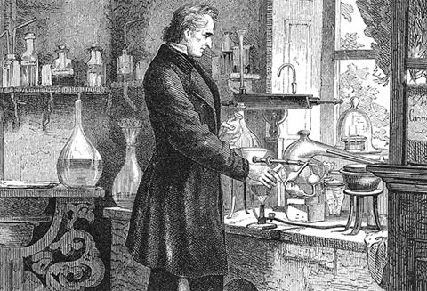

Как правило, мы не задумываемся, как давно используется в клинической практике лекарственное средство. А ведь есть препараты, которые человечеством применяются уже на протяжении 100 и более лет, и лекарства остаются эффективными и востребованными. Именно о такого рода препаратах и пойдёт речь в серии из 6 публикаций.
Как правило, мы не задумываемся, как давно используется в клинической практике лекарственное средство. А ведь есть препараты, которые человечество применяет уже на протяжении 100 и более лет, и лекарства остаются эффективными и востребованными. Именно о такого рода препаратах и пойдёт речь в серии публикаций.
Классика XIX века
Аспирин. Полученный из коры ивы аспирин впервые появился на рынке в 1899 г. В настоящее время аспирин является неотъемлемой частью многих схем лечения сердечнососудистых заболеваний, включая профилактику инфаркта миокарда, стартовую терапию инфаркта миокарда (жевательные таблетки аспирина), а также профилактику повторного инфаркта миокарда или инсульта.
Морфин. Полученный из опиума морфин был впервые продан в 1827 г. компанией Мерк (Merck), которая в те времена была всего лишь небольшой аптекой. С тех пор были разработаны лекарственные формы морфина с различными способами доставки препарата, в том числе пероральные, ректальные, внутривенные и чрескожные, а также пролонгированные лекарственные формы, такие как липосомные препараты для инъекций и пероральные средства для купирования хронического болевого синдрома, в том числе для анальгезии, контролируемой пациентом.
Инсулин. Инсулин был открыт в 1869 г., но до 20-х гг. прошлого его не удавалось выделить для использования у животных, а потом и у людей. С момента его открытия были разработаны различные лекарственные формы, в том числе короткого действия (аспарт, лизпро) и длительного действия (детемир, гларгин), а также их комбинации. В настоящее время изучается возможность использования других способов доставки препарата, например, ингаляционного и интраназального.

Old Drugs That Are Still Good Drugs
Medscape